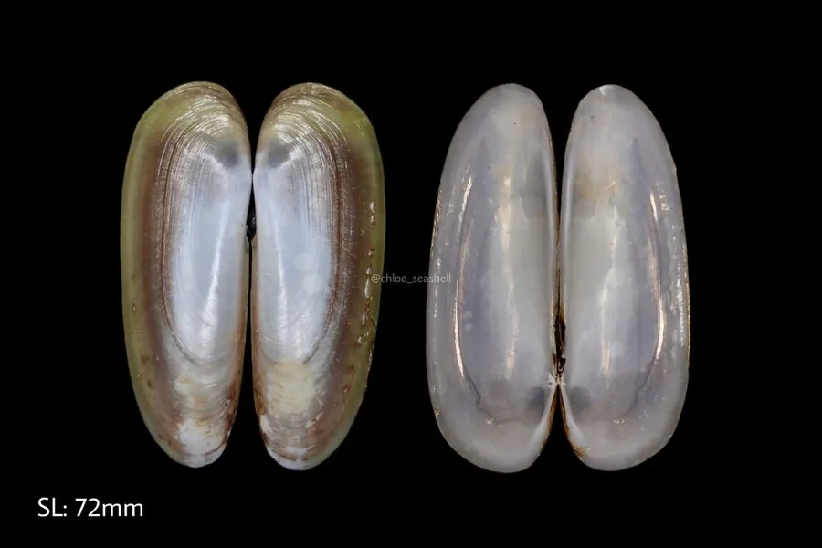

软体动物 · 动物界
小刀蛏 Cultellus attenuatus

壳形细长扁平如小刀的蛏类，壳薄而脆，栖息于潮间带下区至浅海沙泥底，深潜沙中，滤食浮游藻类。
- 分类
- 门软体动物门纲双壳纲目帘蛤目科刀蛏科属刀蛏属
- 栖息环境
- 潮间带下区至水深数十米的沙泥底，潜居深度可达二十厘米以上
- 地理分布
- 中国沿海、日本和朝鲜半岛
- 保护级别
- 尚无保护级别；资源量受滩涂开发与采捕强度影响
物种志
小刀蛏的贝壳细长而扁平，壳长六至八厘米，壳高仅为壳长的四分之一左右，两壳相等，壳形像一把收拢的小刀，小刀蛏之名由此而来。壳质薄而脆，壳面灰白至淡黄，有细密的生长纹，后端略张开，露出水管。壳顶低平，靠近前端，铰合部无齿，韧带细长。足部细长，能缩入壳内。
它分布于中国沿海、日本和朝鲜半岛，栖息在潮间带下区至水深数十米的沙泥底和泥沙底，靠足部在沙中挖掘，潜居深度可达二十厘米以上，退潮时在滩面上留下细小的水管孔，涨潮后伸出长长的水管滤食浮游藻类和有机碎屑。它雌雄异体，繁殖期在春夏，幼虫浮游后附着变态，生长较快。它是中国沿海常见的食用蛏类，肉质鲜嫩，可鲜食或制蛏干，目前尚无保护级别，资源量受滩涂开发和采捕强度影响。
形态与习性
- 壳长六至八厘米，细长扁平如刀
- 壳质薄而脆，灰白至淡黄
- 栖息水层潮间带下区至水深数十米的沙泥底
- 潜居靠足部挖掘，深度可达二十厘米以上
- 食性伸出长水管滤食浮游藻类与有机碎屑
- 利用沿海常见食用蛏，可鲜食或制蛏干
趣味知识
- 它的壳薄得能透光，形状像一把合拢的小刀。
- 它在沙里能钻到二十多厘米深，退潮后只留一个小孔。
- 挖蛏的人会往孔里撒盐，它受不了刺激就自己钻出来。